TAC Meeting #2
Friday June 13th, 2014
Ian Czekala
iczekala@cfa.harvard.edu
Introduction
My thesis: Fundamental Properties of Young Stars.
We use sub-millimeter and optical observations of young stellar systems and protoplanetary disks to learn about the earliest stages of stellar evolution.
This talk is an update on my progress since our meeting last November. Specifically, about my progress towards the first three papers we discussed.
Measure the mass (SMA/ALMA) and fundamental properties (optical) of young stars to calibrate pre-main sequence evolution.
Status updates
- data collection (radio + optical)
- proposals (optical)
- conferences and papers
ALMA and SMA
- Cycle I has been observed(?)
- Cycle II proposal ranked grade C ("filler")
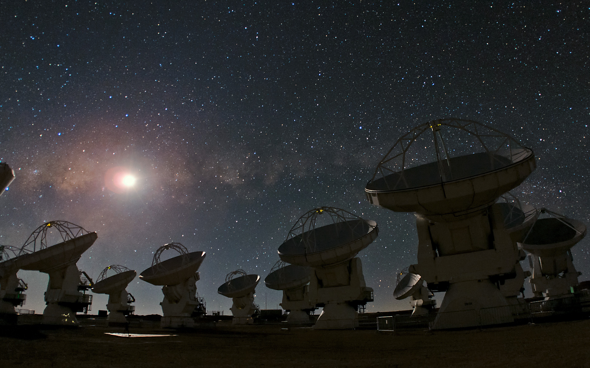
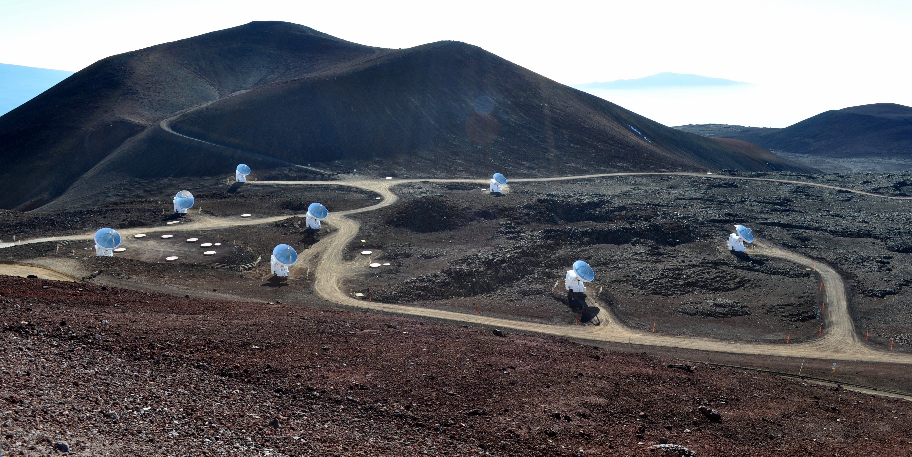
- SMA data complete in the archive (observed in Feb)
- queue observing at SMA in February
Fall 2013 Optical
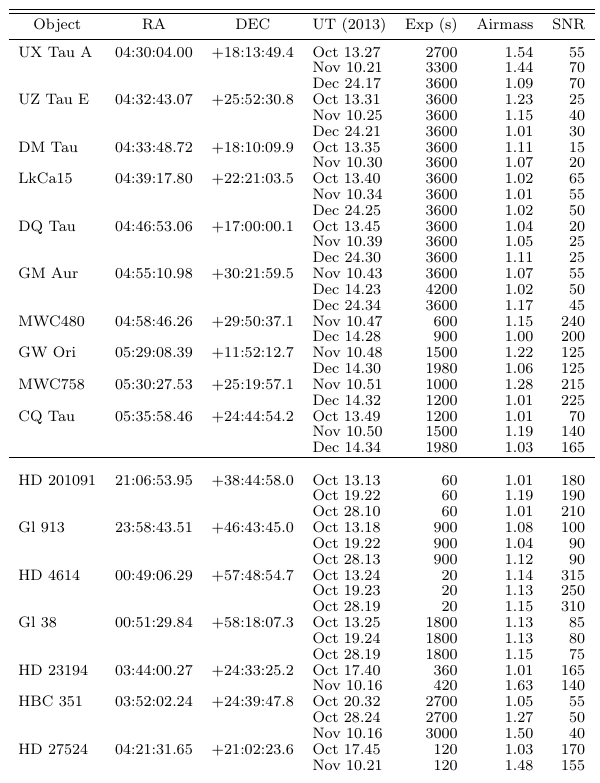
FLWO TRES and Keplercam, high resolution spectroscopy and photometry.
10 northern transition disk sources and template stars, all targets at least 2 epochs, many for 3.
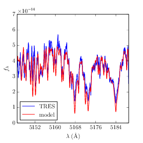
Spring 2014 Optical
10 southern transition disk sources with MIKE on Magellan 6.5m
SMA data already in the archive.
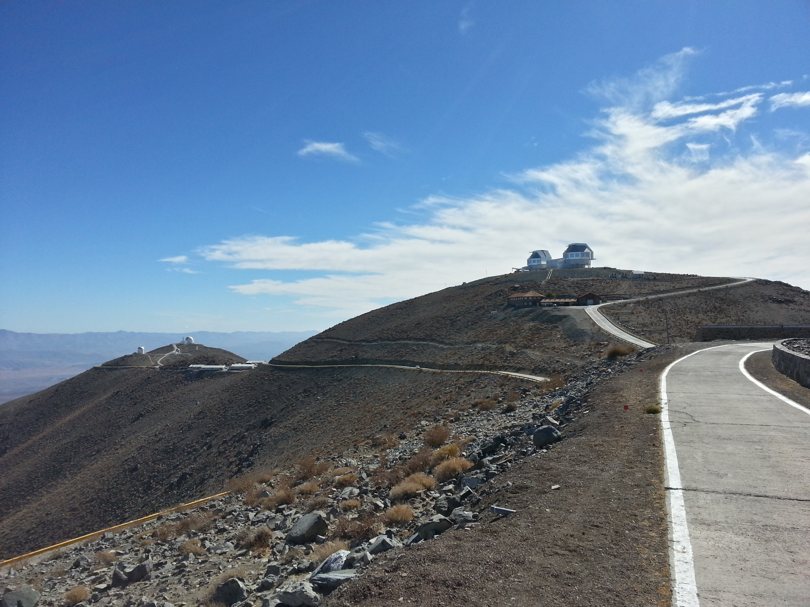
Resubmit for Spring 2015
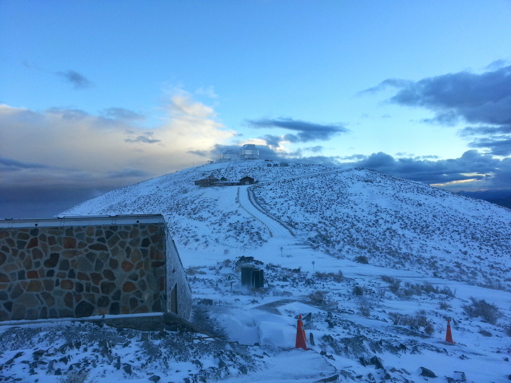
~5 usable targets in 3-4" seeing.
MIKE proposal will be resubmitted October 2014.
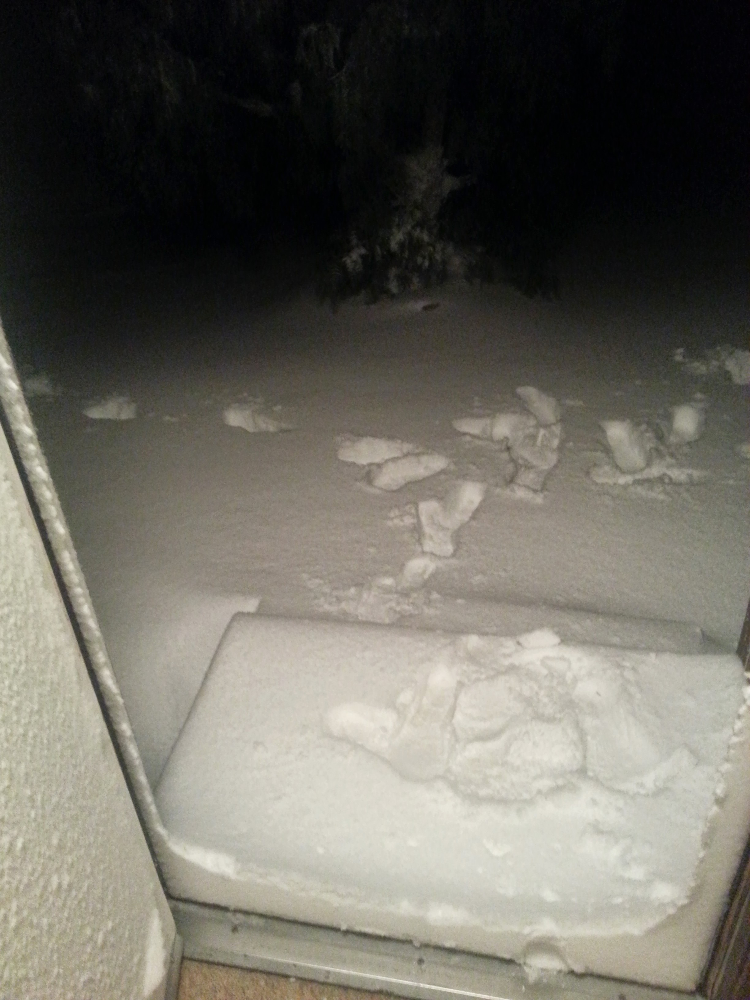
New optical proposal Fall 2014
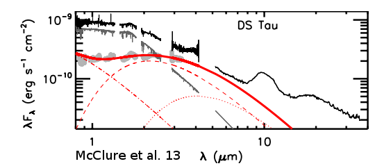
Combined TRES/Keplercam proposal to study veiling systematics in LkCa 14/15. Submitted to OIR June 10th
Leverages the code infrastructure already developed.
If approved by the TAC, this would lead to a new paper.
Optical proposal
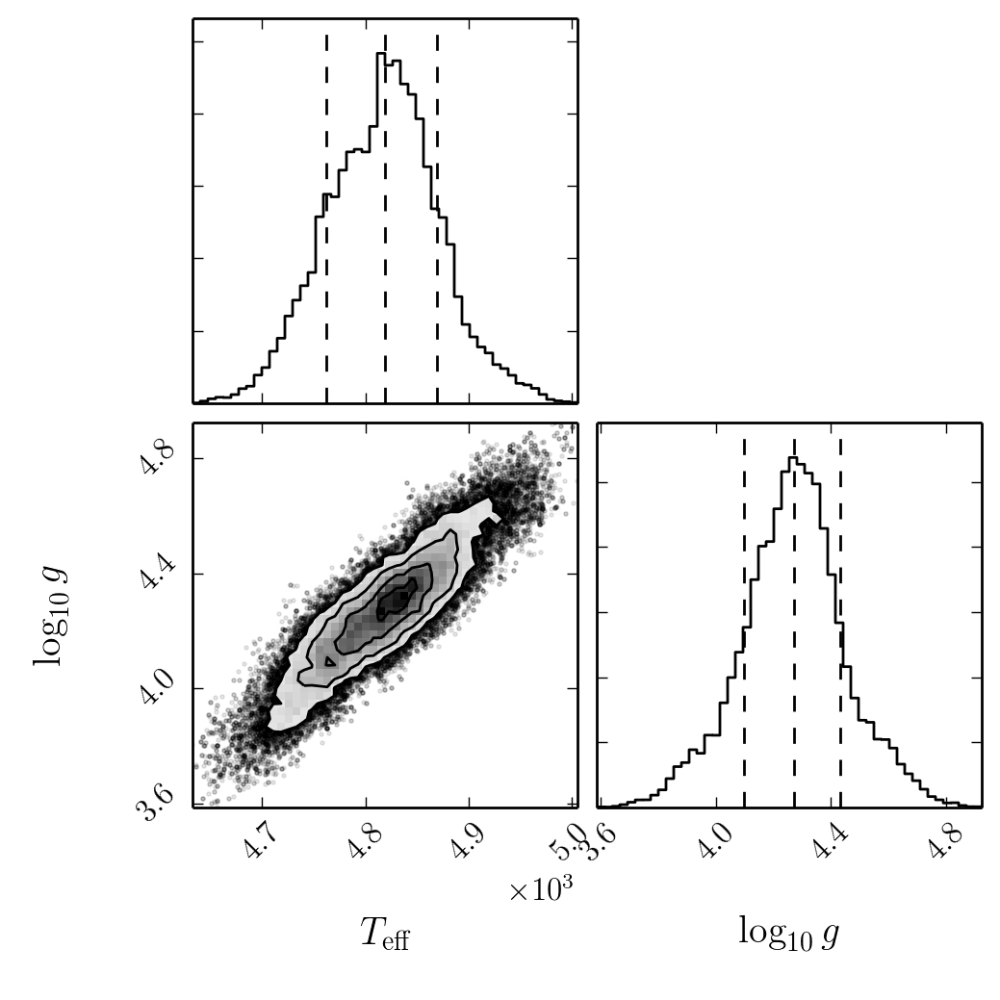
- Observe LkCa 14 and LkCa 15 at 50 epochs
- Infer stellar parameters
- Track systematics
Following slides under heavy construction!
Conference and paper status
Significant progress towards the methodology. Novel technique. Paper to be submitted (ApJ) mid-summer. Presentation at the AAS. Upcoming presentation (June 18th) at Kepler ExoStat. Rest of the talk is explaining the first paper.
Hello
Hello
Desire: stellar properites
stellar parameters = $T_{\rm eff}$, $\log g$, $[{\rm Fe}/{\rm H}]$
- Draw a spectrum from a grid of pre-computed synthetic spectra from PHOENIX, Kurucz, and others
- Rotationally broaden, Doppler shift, convolve with instrumental line spread function (LSF), downsample to match data
- compare model to data and estimate which stellar parameters fit best
profit
Covariance kernels to the rescue
Parameterize and understand the noise/residuals, so that our fits are not biased
- Global covariance structure
- Regional covariance structure (bad lines)
with correlations, likelihood is
$$p(\textbf{y}) = \frac{1}{\sqrt{(2 \pi)^N \det(C)}} \exp\left ( -\frac{1}{2} \textbf{r}^T C^{-1} \textbf{r} \right ) $$
$$ \ln[p(y)] = -\frac{1}{2} \textbf{r}^T C^{-1} \textbf{r} - \frac{1}{2} \ln \det C - \frac{N}{2} \ln 2 \pi $$
Global covariance structure
Matern kernel for global covariance structure $$ k_{\nu = 3/2}(r, a, l) = a \left(1 + \frac{\sqrt{3} r}{l} \right ) \exp \left (- \frac{\sqrt{3} r}{l} \right ) $$

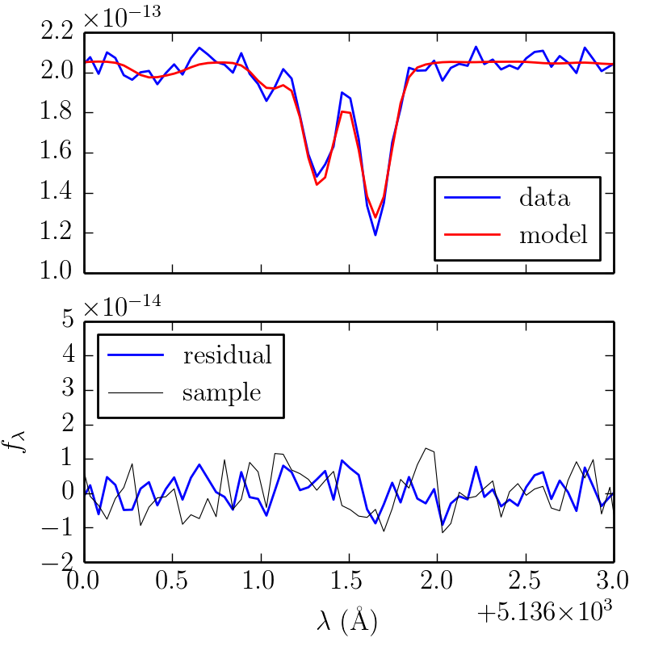
Regional covariance
Desire: downweight bad lines like we would outlier points
$$k_{\rm G}(x, x^\prime | a, \mu, \sigma) = \frac{a^2}{2 \pi \sigma} \exp \left ( - \frac{[(x - \mu)^2 + (x^\prime - \mu)^2]}{2 \sigma^2}\right )$$
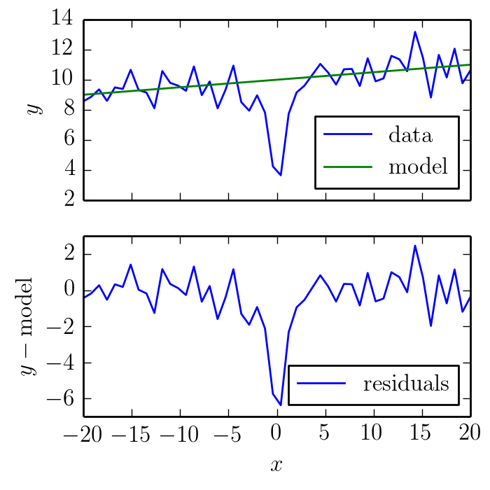
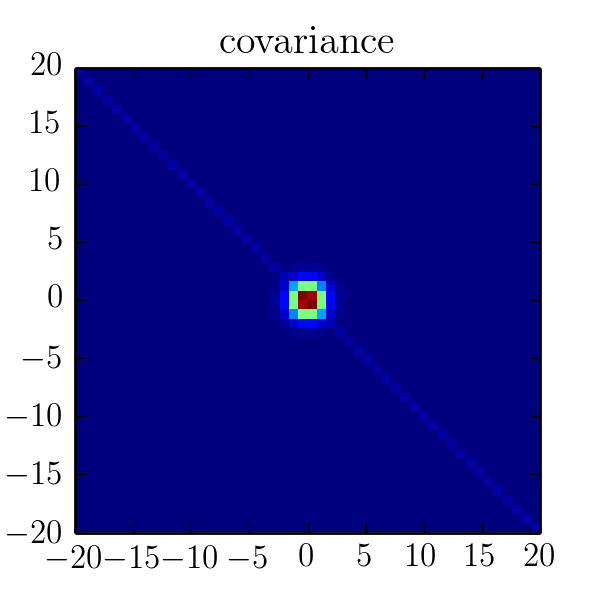
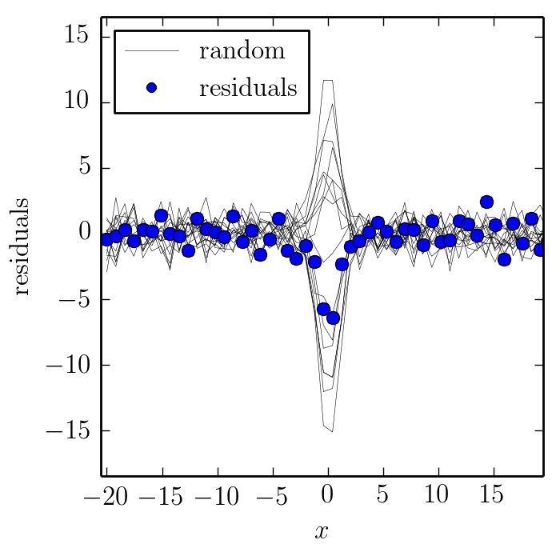
(press down)
Recover the line parameters
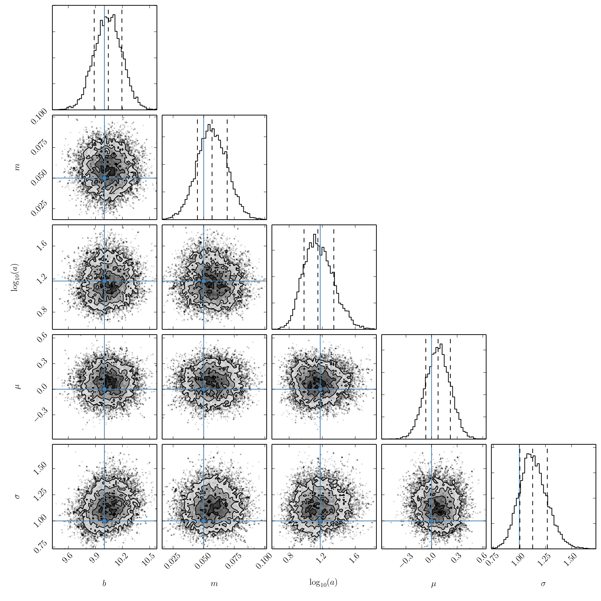
Courtesy dfm/emcee & dfm/triangle
(press down)
More complicated residuals
$$k(x, x^\prime | h, a, \mu, \sigma) = \exp \left ( \frac{-( x - x^\prime)^2 }{2 h^2} \right ) k_{\rm G}(x, x^\prime | a, \mu, \sigma)$$ $h$ is a "bandwidth." If $h$ is small, then there will be high-frequency structure. If $h$ is large, then only low-frequency structure will remain.
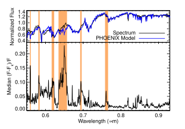
Mann et al. 2013
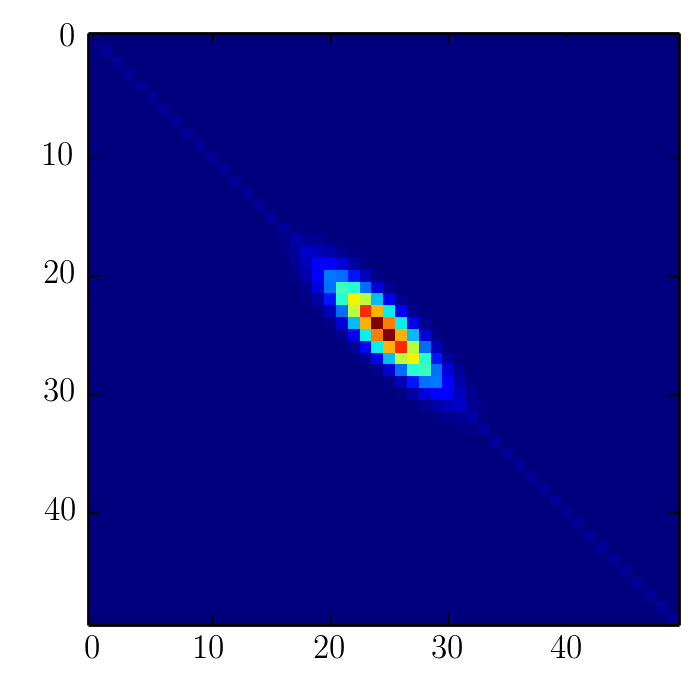
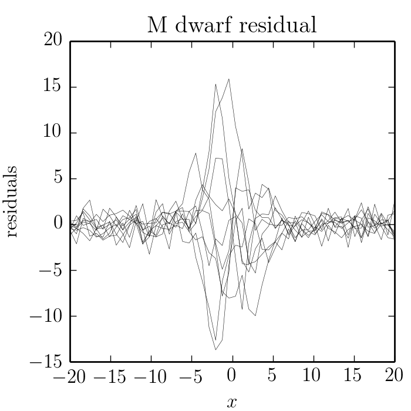
Cycle of improvement
- Fit many stellar spectra
- Learn the covariance structure, including bad regions
- Use the covariances to regress out what the model should be
These improvements to the models could be used to inform the modellers what might need improvement.
If you're impatient/a DIY-er, you can also correct the models yourself by "inferring" the correct synthetic spectrum in this region.
Conclusions
- Covariance kernels are useful for modelling stellar spectra
- Specific kernels can be used to account for bad lines
- Learnt covariance structure can be used to improve the stellar models For an interactive example of a fit to real data, click here.